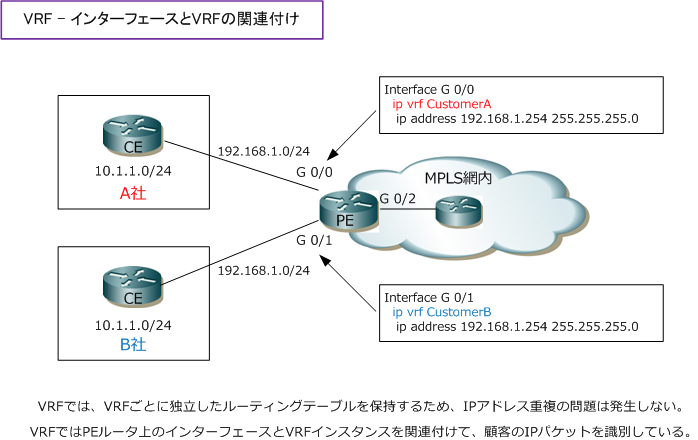
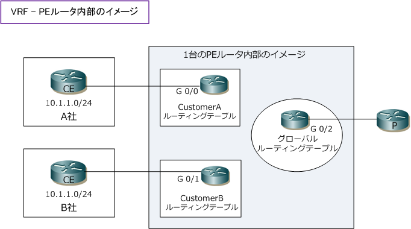
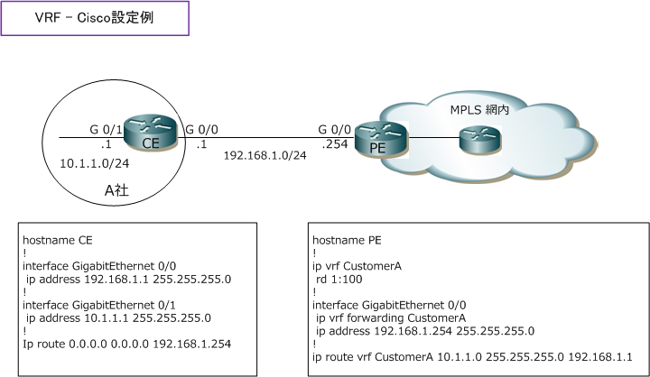

VRF
VRFとは
VRF（Virtual Routing and Forwarding）は、1つのルータ上で独立した複数のルーティングテーブルを保持 できる技術です。VRFにより、1台のルータ上でインスタンスごとにルーティングテーブルを保持することが できるため、例えばカスタマーごとにルーティングテーブルを保持できます。VRFの技術を実装させることで、 IP-VPNのようなWANサービスを実現することができます。IP-VPNでは、MPLSの技術が使用されていますと 説明しましたが、その他にも今回紹介するVRFの技術が使用されています。
VRF - 基本構成
IP-VPNにおいてVRFの設定はPEルータで実装されます。このPEルータは、MPLS網のLERにあたるルータです。 IP-VPNでカスタマーから送信されてくるIPパケットには、ラベル付けもタグ付けもないIPパケットであるため、 PEルータでどの顧客のパケットなのかを識別するためにPEルータのインターフェースとVRFを関連付けします。

※ VRFインスタンスと関連付けるインターフェース は、物理インターフェースでもサブインターフェースでもOKです。
PEルータで顧客ごとに独立したルーティングテーブルを保持することは分かりましたが、PEルータ自身にも 顧客ごとのルーティングテーブルとは別に、MPLS網内でルーティングするためのルーティングテーブルを PEルータは保持しています。このルーティングテーブルの事をグローバルルーティングテーブルと言います。

VRF - Cisco設定例
以下では1行目でVRF名を「CustomerA」として作成して、そのVRFの識別子を「1:100」として設定して います。VRFの識別子をRD（Route Distinguisher）と言います。RDは、MPLS-VPNの項目で詳細に解説。
VRFの作成
PE(config)# ip vrf CustomerA PE(config-vrf)# rd 1:100
VRFをインターフェースに適用します。VRF作成、インターフェースの適用はPEルータだけで設定します。 VRFを設定したインターフェースのIPアドレスはsh ip interfaceではなく、sh ip vrf interfaceで確認します。
VRFのインターフェースへの適用
PE(config)# interface GigabitEthernet 0/0 PE(config-if)# ip vrf forwarding CustomerA PE(config-if)# ip address 192.168.1.254
VRFによるスタティックルーティングの設定もPEルータだけで設定します。例えば上図では、A社もB社も 10.1.1.0/24 のネットワークですが、VRFを指定することで該当するVRFのルーティングテーブルに反映。
VRFのスタティックルートの設定
PE(config)# ip route vrf CustomerA 10.1.1.0 255.255.255.0 192.168.1.1

PEで設定するVRFを利用したダイナミックルーティングプロトコル（ RIP/EIGRP/OSPF ）の設定を紹介します。 RIPでは、router rip の後にただnetworkコマンドでネットワークを定義するだけでは、グローバルルーティング テーブルで通知されてしまうので、VRFを認識させるためにaddress-familyコマンドを使用しVRFを指定します。
VRFのルーティング - RIP
PE(config)# router rip PE(config-router)# address-family ipv4 vrf CustomerA PE(config-router-af)# network 192.168.1.0
PE(config-router)# address-family ipv4 vrf CustomerB PE(config-router-af)# network 192.168.1.0
EIGRPでは、VRFを認識させるためにaddress-familyコマンドを使用してVRFを指定するのはRIPと同じですが 該当するVRF上で動作するEIGRPのAS番号をautonomous-systemコマンドで指定します。以下設定例では AS番号 1 がグローバルルーティングテーブルで使用する番号、10がVRF「 CustomerA 」で動作する番号です。
VRFのルーティング - EIGRP
PE(config)# router eigrp 1 PE(config-router)# address-family ipv4 vrf CustomerA PE(config-router-af)# network 192.168.1.0 PE(config-router-af)# autonomous-system 10
PE(config-router)# address-family ipv4 vrf CustomerB PE(config-router-af)# network 192.168.1.0 PE(config-router-af)# autonomous-system 10
OSPFではプロセス番号ごとにVRFを割り当てるため、RIPやEIGRPのようにaddress-familyの指定は不要。
VRFのルーティング - OSPF
PE(config)# router ospf 1 vrf CustomerA PE(config-router)# network 192.168.1.254 0.0.0.0 area 0
PE(config)# router ospf 2 vrf CustomerB PE(config-router)# network 192.168.1.254 0.0.0.0 area 0
当然ながらRIP、EIGRP、OSPFのCE側の設定は、address-familyなどの設定不要の通常の設定となります。